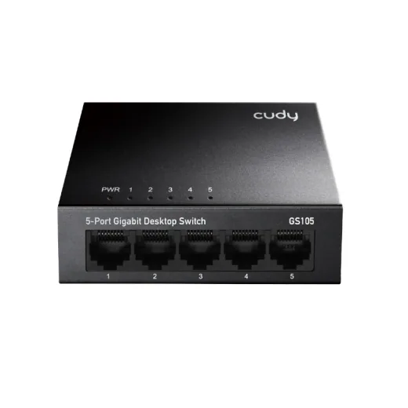
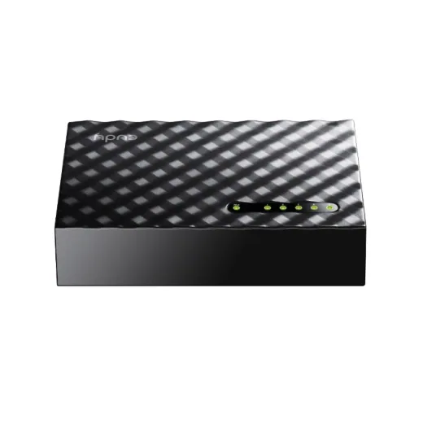
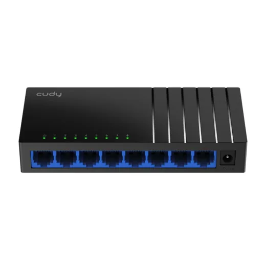
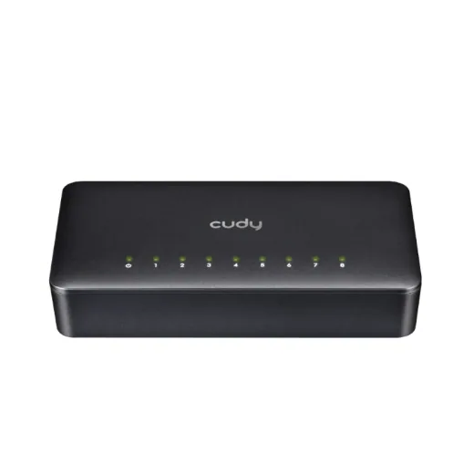
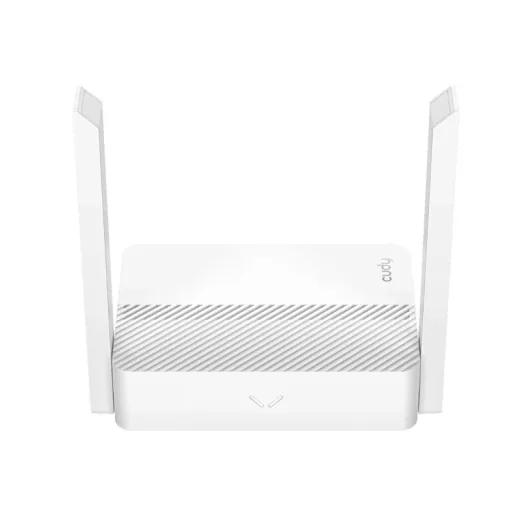
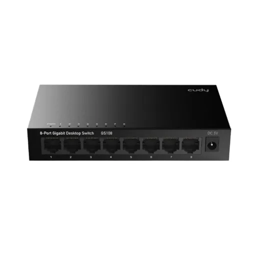
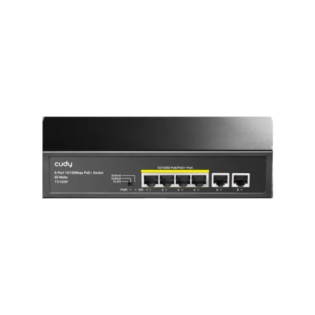
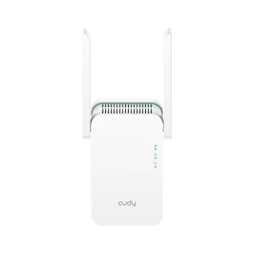

CUDY · Modelo GS105
Switch 5 Puertos 10/100/1000 Mbps Cudy Gigabit Metal Gs105
L 345
En Acosa
Precio en cada tienda
| Tienda | Precio | Antes | Disponibilidad | |
|---|---|---|---|---|
| Acosa | L 345 | — | Disponible | Ver en tienda › |
Precios referenciales tomados de cada tienda el 14 de noviembre de 2026. El precio válido es el que muestra la tienda al comprar.
Otros routers y redes CUDY

Switch 5 Puertos 10/100/1000 Mbps Cudy P/Escritorio Gs105dL 290En Acosa
Switch 8 Puertos 10/100/1000 Mbps Cudy Gigabit P/Escritorio Gs108dL 415En Acosa
Switch 8 Puertos 10/100 Mbps Cudy P/Escritorio Fs108DL 245En Acosa
Router Cudy 300Mbps 2.4Ghz N300 Dual BanbL 485En Acosa
Switch 8 Puertos 10/100/1000 Mbps Cudy Gigabit Metal Gs108L 595En Acosa
Switch 6 Puertos 10/100 Mbps C/Poe+4 Puertos Cudy P/Escritorio Fs1006PL 625En Acosa
Repetidor Cudy 1200Mbps Dual Band 5Ghz Wifi 6 Re1500L 645En Acosa Router Cudy 867Mbps Inalambrico 5Ghz Ac1200 Dual BandL 695En Acosa
Router Cudy 867Mbps Inalambrico 5Ghz Ac1200 Dual BandL 695En Acosa